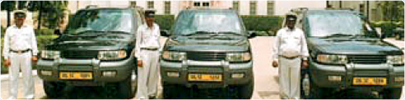

Travel Trade
Apply online for E-Recognition of Travel Trade Service Providers
Travel Trade
The Ministry of Tourism has a scheme for granting approval to hotel projects from the point of view of this suitability for international tourists. A classification committee set up by the Ministry classifies the functioning hotels under the star system into six categories from star one to five star deluxe. Similarly, the Ministry has a scheme of approving Travel Agents, Tour Operators, Adventure Tour Operators and Tourist Transport Operators, the idea being to encourage quality, standard and service in these categories so as to promote Tourism in India.This is a voluntary scheme open to all bonafide agencies.
Travel Agents
A Travel Agent is one who makes arrangements of tickets for travel by air, rail, ship, passport, visa, etc. It may also arrange accommodation, tours, entertainment and other tourism related services.
Inbound Tour Operators
An Inbound tour operator is one who makes arrangements for transport, accommodation, sight seeing, entertainment and other tourism related services for foreign tourists
Tourist Transport Operators
A Tourist Transport Operator Organization is one, who provides tourist transport like cars, coaches, boats etc. to tourists for transfers, sight seeing and journeys to tourist places etc.
Adventure Tour Operators
An Adventure Tour Operator is one who is engaged in activities related to Adventure Tourism in India namely, water sports, aero sports, mountaineering, trekking and safari of various kinds, etc. In addition to that he may also make arrangements for transport, accommodation, etc.
DOmestic Tour Operators
A domestic tour operator is one who makes arrangements for transport, accommodation, sight seeing, entertainment and other tourism related services for domestic tourists.